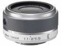

该镜头采用8片6组，含1个ED镜片和1个非球面镜片，1个防护玻璃片的镜头结构。拥有2.5倍变焦能力，可通过此镜头上的可伸缩镜筒按钮实现相机电源的开启或关闭。
套头中规中矩，感觉是10-30的替代品，成像素质还可以。
便宜的拆机头做为旅游使用非常合适。11mm端在F5时的解析度挺高的。尼康用心的套头作品。
没有防抖，为了把成本降低？还是对机身高感过于自信？实在是坑爹。此外该头第一片是防护玻璃，不严密容易进灰，设计缺陷。
体积小巧，成像优秀的变焦镜头
1 体积小巧 2 成像优于10-30VR 3 拆机头价格白菜 4 对焦速度快
1 没有VR 2 变形较大 3 做工普通